Recognisable silhouette
The analysed references include Mercedes eCitaro, MAN Lion’s City E, Isuzu Citiport, Volvo 7900, Solaris, Seoul city buses and Yutong U18.
A contemporary electric bus concept that connects Phrygian heritage with the everyday needs of Ankara’s passengers.
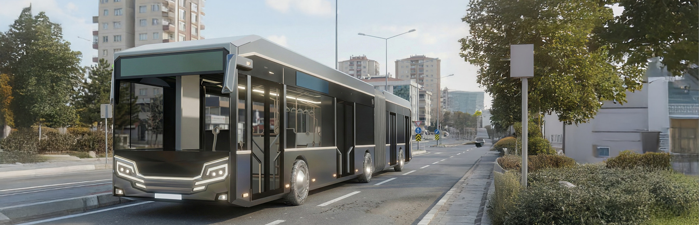
HARMA E-BRT reinterprets Phrygian heritage through a retro-futuristic lens, translating Anatolian monumentality into an electric mobility identity for Ankara. The team project combines vehicle styling with passenger needs, route context and interior organisation.
Benchmarking began with four-vehicle sketch studies across orthographic and perspective views. Form, character lines, colour, proportion and distinctive features were compared before a new vehicle language was developed.
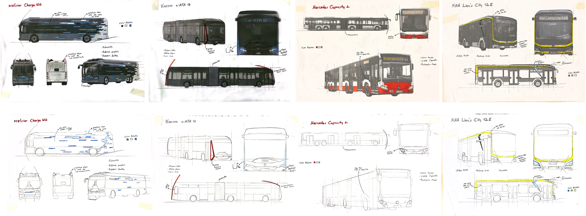
| Component | Design consideration |
|---|---|
| Front face | A recognisable arrangement of character lines and functional elements establishes brand identity and makes the bus easy to identify. |
| Headlights and daytime running lights | A clear lighting signature improves visual readability in traffic—especially relevant for quiet electric vehicles. |
| Door layout | Door position and opening width affect passenger flow, waiting time and the proportions of the side elevation. |
| Side profile | Continuous character lines guide the eye along the vehicle and prevent a fragmented silhouette. |
| Roof equipment | HVAC, battery packs and ventilation modules can be grouped within fairings or a continuous housing. |
| Materials | The study considers composite panels and lightweight aluminium in relation to mass, impact resistance and structural strength. |
The analysed references include Mercedes eCitaro, MAN Lion’s City E, Isuzu Citiport, Volvo 7900, Solaris, Seoul city buses and Yutong U18.
City colours, symbols and typography reinforce identity. A consistent visual language connects the exterior to the wider transport service.
Interviews with students, parents, older people, travellers and drivers identified friction points in urban transport. Observations also covered stop buttons, screens, first-aid provision, handholds and seating arrangements.
The findings were translated into spatial, ergonomic and information requirements, shaping both the vehicle interior and the scenarios used to develop it.
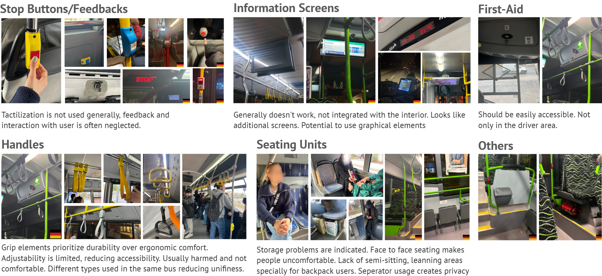
| User group | Observed difficulty | Design direction |
|---|---|---|
| METU students | Heavy backpacks, physical strain and unstable standing conditions; uncertainty about route information. | Bag-friendly spaces, standing support and reliable real-time information. |
| Older passengers and parents | High steps, abrupt braking and quickly closing doors create anxiety. | Low-floor boarding, accessible support and smoother seating transitions. |
| Passengers with luggage or trolleys | Narrow aisles and missing storage turn circulation into an obstacle course. | Dedicated luggage zones and clearer paths through the vehicle. |
| Drivers | Crowding creates blind spots and makes doors harder to monitor; cabin comfort also matters. | Camera-assisted visibility and improved climate control. |
Separate backpack and luggage storage from the main circulation path.
Consider universal handrail heights and transitions that are manageable for children and older passengers.
Use clear wayfinding and trustworthy digital information to reduce navigation stress.
The route study compared central and peripheral connections, including Kızılay–Ayrancı–Atakule, Tunalı–Ulus, ODTÜ–Kızılay, Kızılay–Çayyolu–Yaşamkent and connections towards Gölbaşı. Existing metro overlap, passenger variety and the opportunity for a distinct BRT service informed the choice.
The selected Gölbaşı–Söğütözü–Koru alignment creates a direct connection that bypasses Kızılay and reduces reliance on multiple transfers. The proposal considers dedicated BRT lanes along the congested Eskişehir Yolu corridor.
Residential, educational, commercial and medical destinations bring together students, workers, hospital visitors, shoppers and families. This variety makes accessibility and flexible interior space central to the vehicle brief.
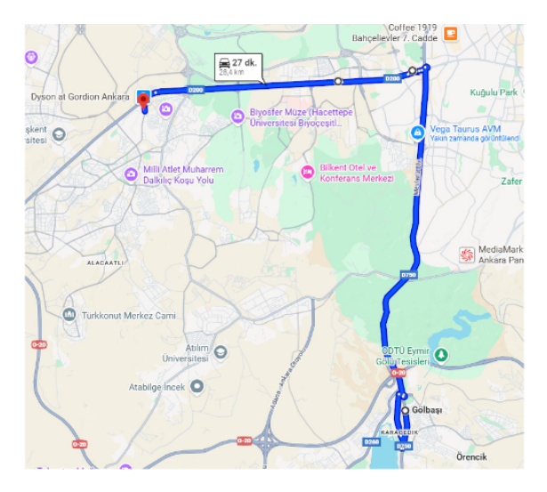
| Area | Implications for the vehicle |
|---|---|
| Gölbaşı | Residential origin with commuters, students and families; a strong morning flow towards Söğütözü, ODTÜ and Bilkent. |
| Söğütözü | Transport and commercial hub serving AŞTİ travellers, offices and shopping destinations; substantial transfer activity. |
| ODTÜ / METU | High-volume student travel, boarding waves around class changes and backpack-heavy passengers who need standing and circulation space. |
| Bilkent and City Hospital | Shift-working hospital staff, visitors with accessibility needs and university students. |
| Koru / Çayyolu | Residential destination and metro interchange with long-distance commuters and evening return flows. |
The moodboards connect Phrygian artefacts, geometric forms and material references with a contemporary electric vehicle. The exploration includes ODTÜ Museum references and a palette of dark neutrals, greens, warm metallic tones and muted accents.
The intention is to reinterpret heritage through proportion, surfaces and detail. The exterior and interior share the same geometric vocabulary, creating a consistent identity across different scales.
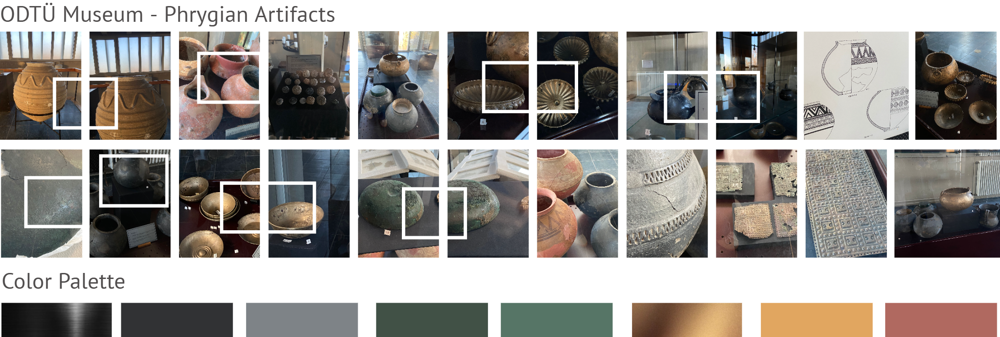
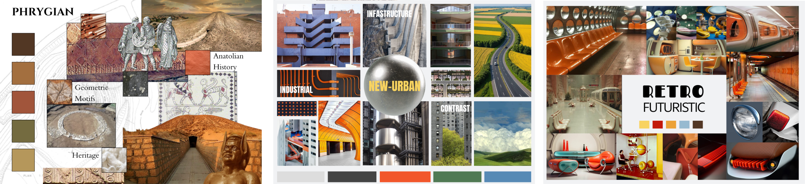
Several plan arrangements explore seating, doors, standing capacity and accessible spaces. Sketches were tested through a physical interior model and digital layouts, then refined around the passenger needs identified in the research.
The final plan distinguishes seating, accessibility, leaning, storage and door zones. A broad standing area accommodates dense passenger flows, while multi-use storage and LED surface lighting help organise the interior.
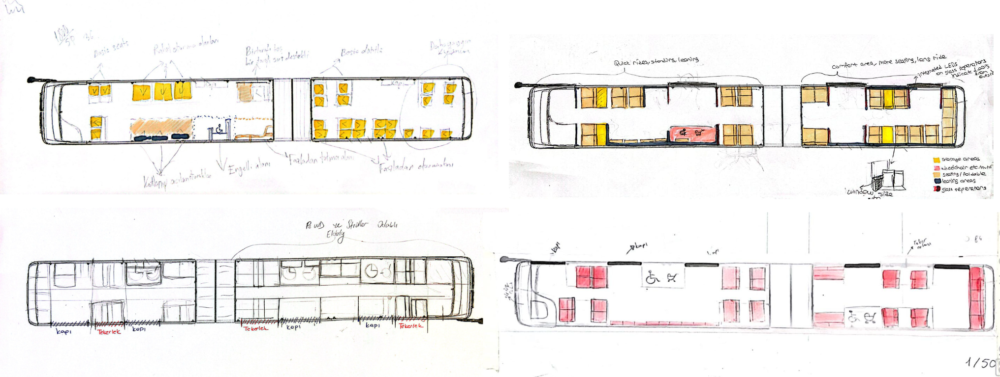
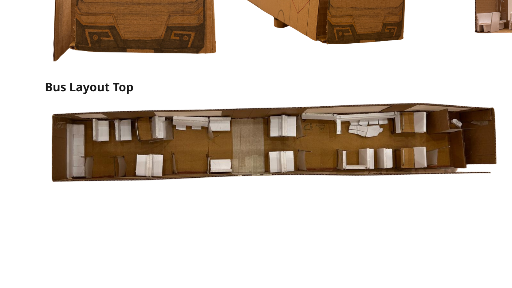
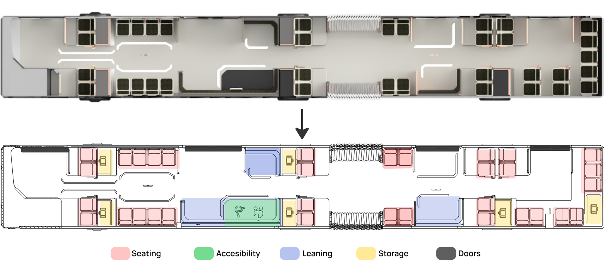
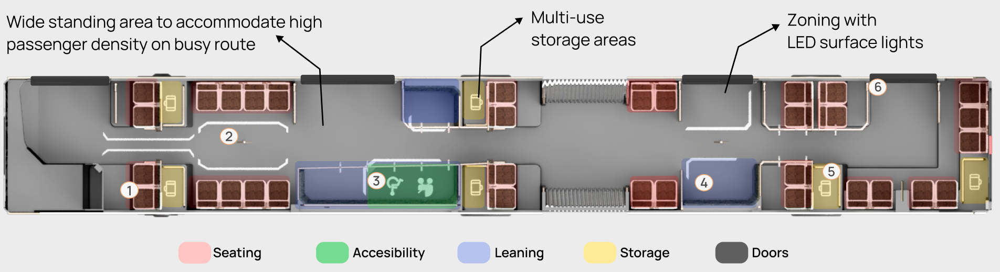
Maintain room for high passenger density on a busy corridor and reduce conflicts around the main path.
Give backpacks and luggage defined places without treating every trip as a seated journey.
Use LED surface lights and the organisation of support elements to make the layout understandable.
The passenger scenarios examine independence, physical effort and circulation. They connect the layout to everyday actions: identifying an entrance, boarding, placing belongings, using support and preparing to leave.
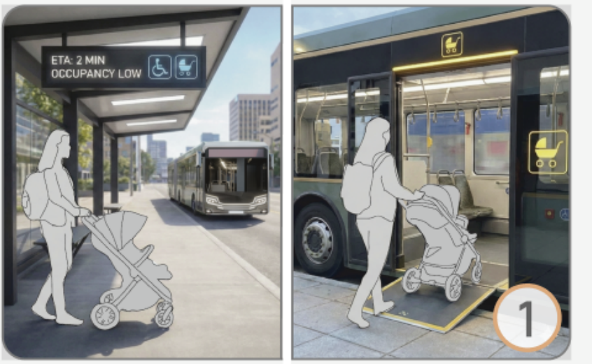
Stop information and stroller symbols make the appropriate entry point visible before boarding. A level transition reduces lifting and physical effort.
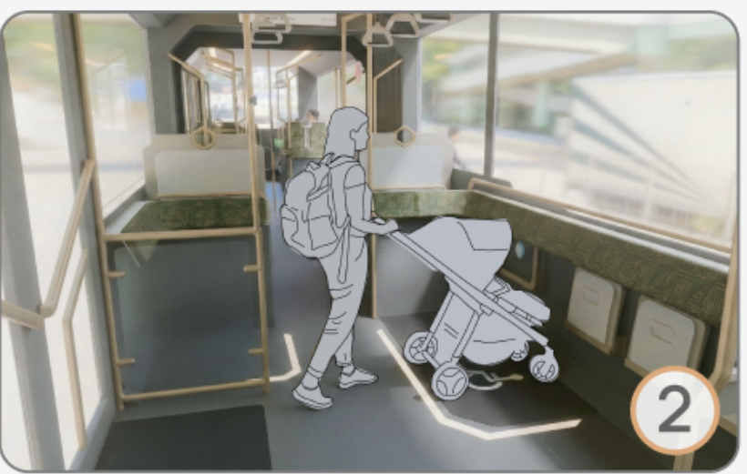
A clear interior path leads to the stroller area rather than forcing the parent to negotiate a crowded aisle.
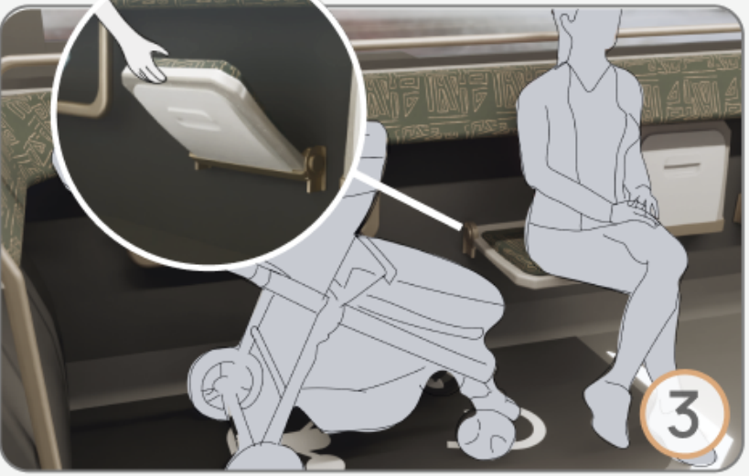
The folding seat provides a place for the parent next to the stroller while allowing the space to remain flexible.
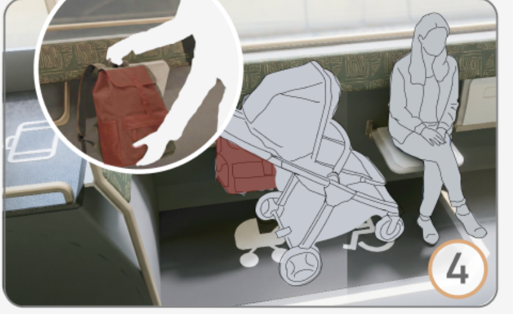
An adjacent surface keeps belongings within reach and out of the circulation path.
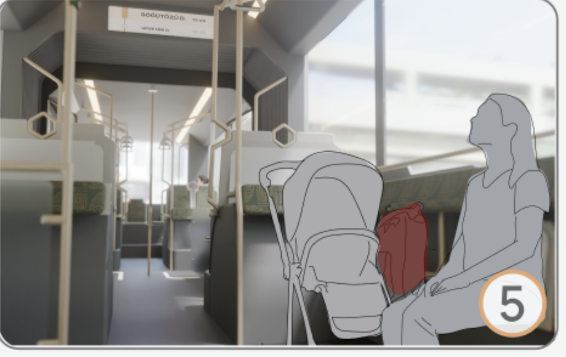
The parent can remain beside the stroller in an organised space with accessible handholds.
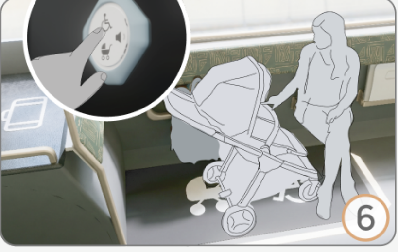
A nearby stroller-related request control supports preparation for an accessible exit and reduces the need to ask others for help.
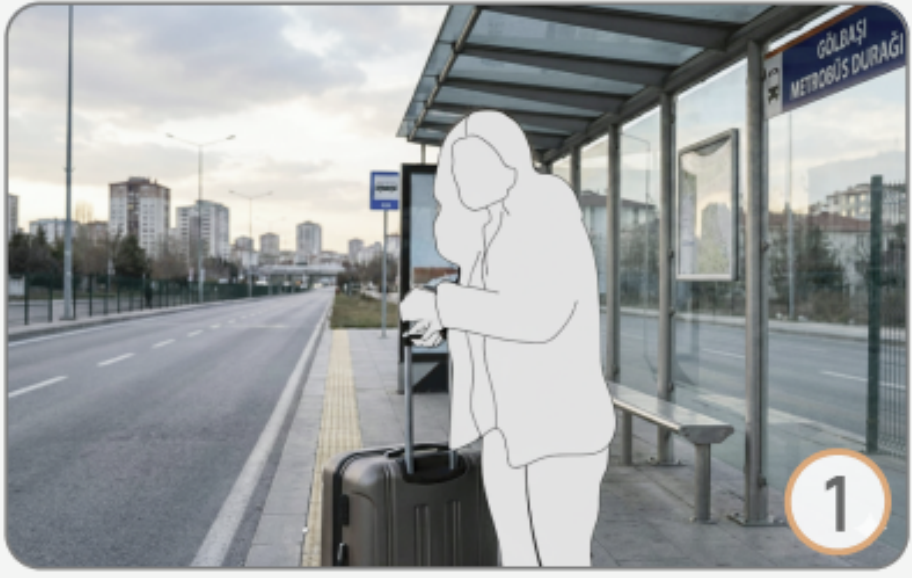
The journey begins at the stop with luggage and a clear view of the approaching service.
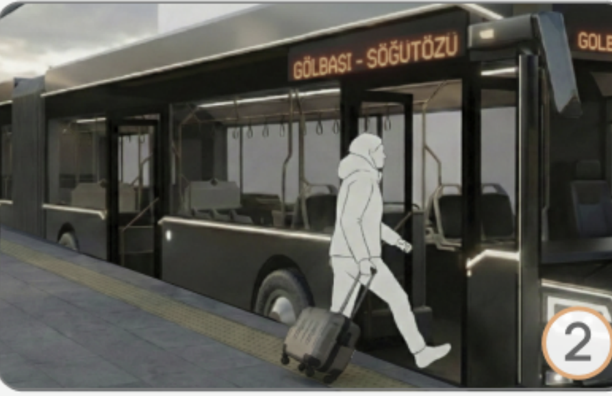
The accessible entrance allows the passenger to roll luggage into the vehicle.
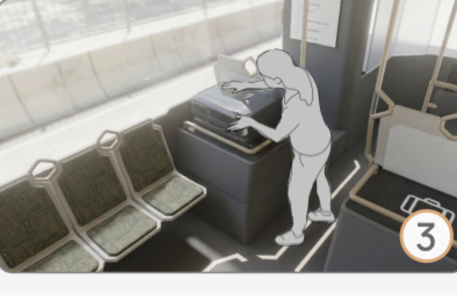
A dedicated area keeps the bag stable and removes it from the main aisle.
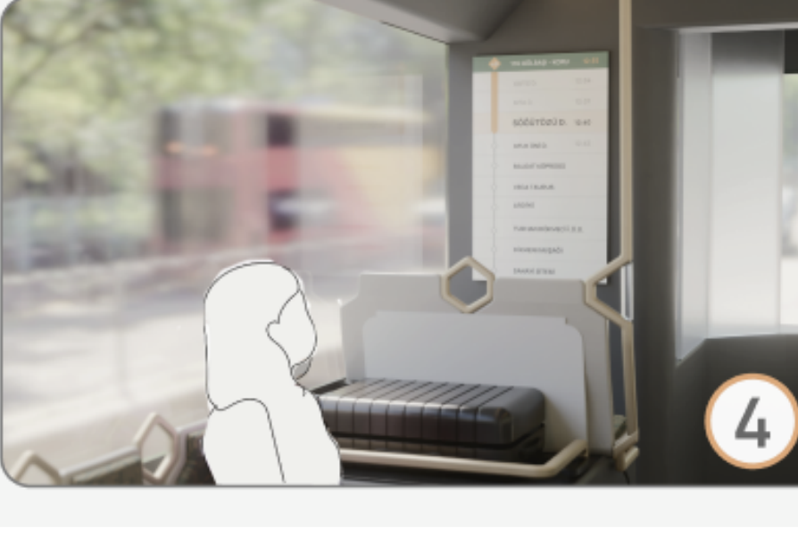
A leaning and support area lets the passenger remain near the luggage while preserving space for others during busy periods.
Exterior geometry combines Phrygian motifs with a contemporary electric vehicle aesthetic. The front and side views show how the lighting, glazing and body surfaces establish a continuous vehicle identity.
Inside, ambient LED zoning and structural centre poles organise the passenger space. Seats and support details carry geometric Phrygian references into the parts of the vehicle passengers encounter directly.


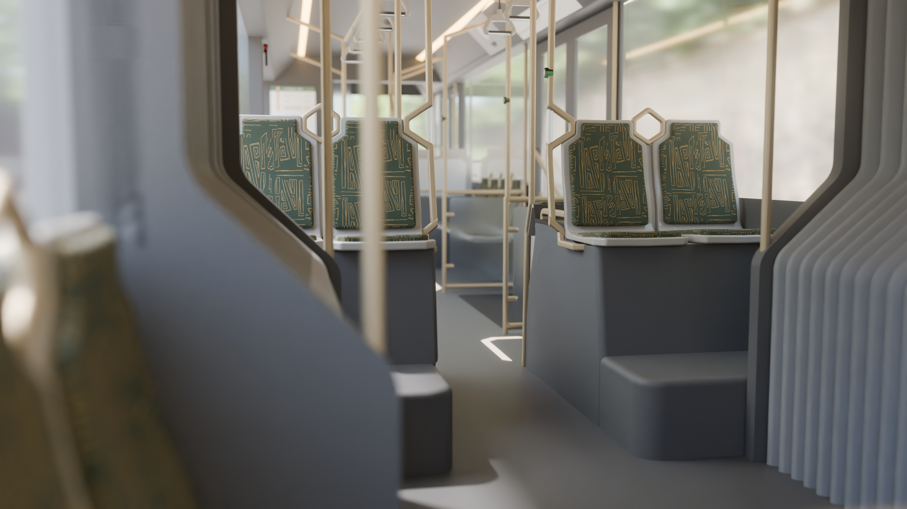
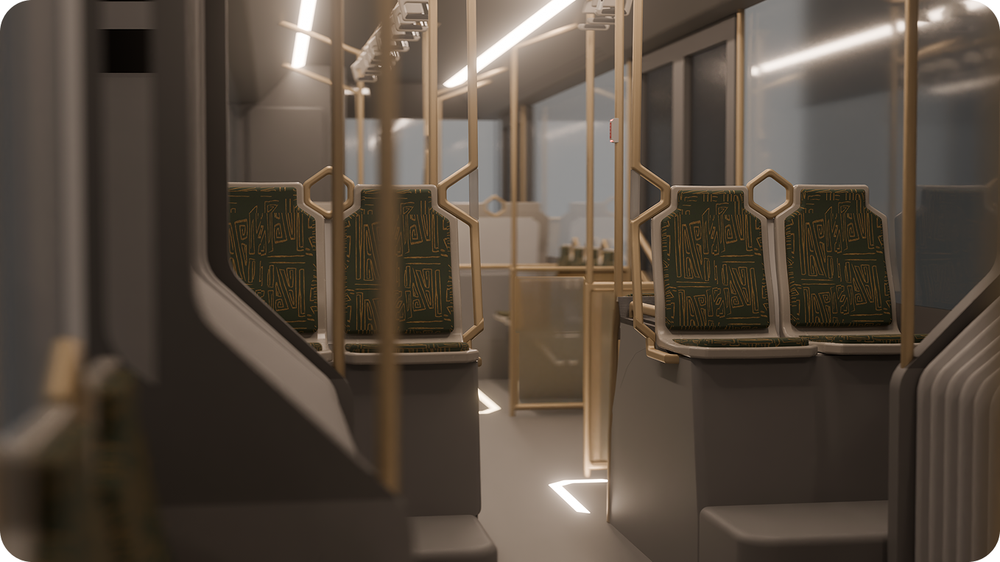
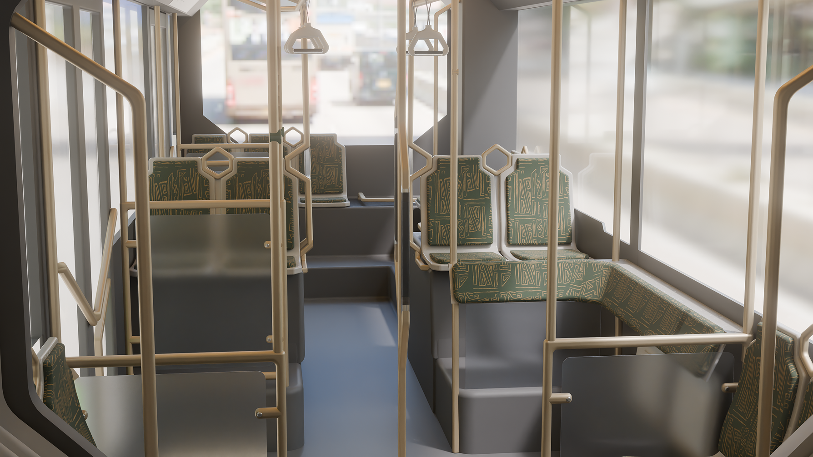
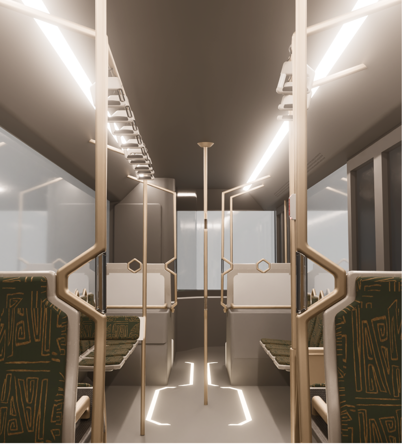